Zelda3C Diary
November 30, 2006 - Quick diary entry -- just checking in. Funny how one can think "Oooh, time off from work means free time!" when the holidays really mean less free time than usual. Between eating, socializing, shopping, and getting over being sick, there hasn't been much Zelda3C time. It drives me crazy to wait all week for the weekend, getting maybe one night of creation time, only to have the weekend drained away as well. Stuck behind the wheel in the car or waiting around in lines, I've done lots of mental planning for what I'll do when precious computer time begins...That's not to say I've had *no* free time. I'm at the end of Session 2 of the forest. (All new designs are divided into sessions roughly the size of 28x16 tiles, or one really large house.) Wow, I haven't written since the castle?? Well, maybe I do have more to write about...
In Session 1, I created the very first horizontal, hollow log. (Remember, in the Lost Woods, there were only vertical logs.) This also introduced a little bit of foliage (bush walls), but only enough to surround the new log tunnel. It was an easy session with no major problems. Having used up my path tiles, I "cleverly" used unneeded ladder tiles for the inside of the log. You can't tell the difference because Link does not walk slower on ladder tiles when moving left & right. I walked through it, made sure the sword wouldn't stick out when attacking north or south, and enjoyed the fact that it's finally in the game. I noticed that the hookshot won't cross these tiles, but you can't hookshot yourself into a log anyway.
Now I'm at the end of Session 2, which includes another horizontal log (more foliage around one entrance), two foliage-embedded trees, mini trees, leaves... and more foliage. Now, as I prepare to upload my work into Hyrule Magic (it all gets created in my own program), I realize another problem with using ladder tiles for the log's interior. Monsters can't cross them! Soldiers would never follow you down a mountain ladder, nor would one even follow you up the stairs in Kakariko Town. I can't have moblins stop chasing you when you enter a log -- what, are they afraid of the dark?? It would be inconsistent with the vertical log, which enemies *can* enter. Besides, there are probably other items that won't function over these tiles. So, that's my dissertation on yet another small thing I need work out.
The point of each "session", by the way, is to create a specific part of an area while introducing new elements. All the elements in the forest are technically new, even though most have been done in Zelda 3, since I don't need the same combination of blocks that were originally needed. As more things are introduced in sessions, later sessions get faster to complete because I don't have to arrange tiles for *every* instance of a structure. And of course, there are segments of the forest that have already been completed because standard (unfoliaged) trees and the forest creek are made from common (not area-specific) blocks.
Hopefully, next time I update this diary, I can display a screenshot or two of the new forest. I haven't been receiving as much email lately, probably because this is a busy time of year for people (exams, shopping, etc) and because the forest just isn't as comment-worthy. Nothing unusual about it -- no strange buildings or cool gameplay elements. At least, not at face value... ;)
 What are your thoughts? Reply on the Zelda3C Message Board!
What are your thoughts? Reply on the Zelda3C Message Board!
November 5, 2006 - I'm very late for bed, but here are some comparison shots of Calatia Castle, before and after an overhaul that took two weekends to complete. It's a slight improvement, right?
| 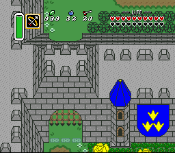 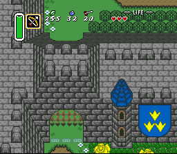 |
| These graphics are so much better! I feel like I've made a jump from NES to SNES in quality. I always knew I'd go back and improve them later, but I never dreamed they could look like this. I guess I became blind to bad tile graphics, having working on it for months on end. The perspective hasn't changed, and won't -- I would rather focus my efforts on new areas. I know it's kind of strange, but it's not that bad... Kind of reminds me of M.C. Escher. ;) |
| 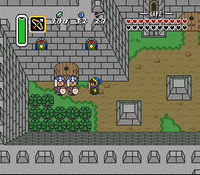 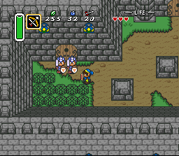 |
| The stained glass windows were the main reason my color count was so low. It's a lot easier to draw great bricks when you have 4 shades of grey instead of 2! Even though I've expanded my color usage from 2 palettes (grey/blue/yellow, grey/brown/yellow) to 3 palettes (grey/blue, grey/brown, yellow/blue), there's no way to have extra colors such as red for these windows anymore. I kind of like the new windows, but I may redraw them later on. |
| 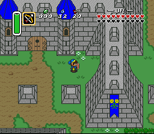 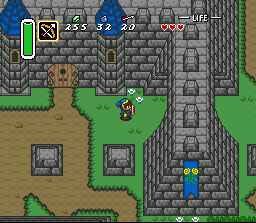 |
| Almost everything has been improved -- the tower cones, the doors, the banners... The most time-consuming part was using two tiles for the tops of walls instead of one. I abolished the sprinkles in favor of alternating brick tiles. I'm a perfectionist in this area, so I had to make sure the lines in the walls matched up with lines in the roof edges. Not that you can tell in this screenshot -- the magic meter and "20 arrows" cover them up. |
| 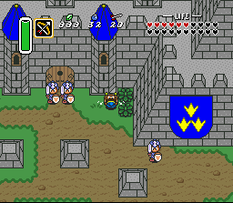 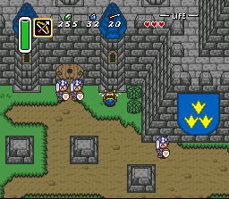 |
| I tried to take the same screen shots as last time. I promise there's no reason to pull on the towers. |
| 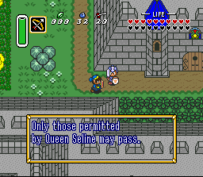 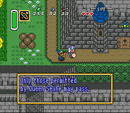 |
| Those stacked, brown rocks aren't going to look the same when I'm finished. They may still be rocks, or they may be a statue... not sure yet. Oh! The flowers look better too -- they're a byproduct of the "grassy trails for shallow water lining" project, in which I changed some palettes around to allow for marsh-style water edges anywhere in the game. |
| 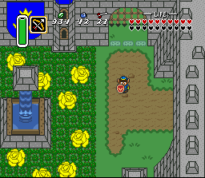 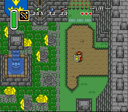 |
| Whoa?! ...I realized I never take screen shots of work in progress, so here's a good one. After I improved the roses, I still needed to change which palette they referred to. At that point, ALL the roses and thorns were turned to stone. They have only partly recovered at this point. I was almost tempted to leave them all grey -- they really do look hard as rock! |
| 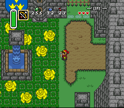 |
| The yellow roses have more depth, thanks to an additional shade of yellow. The thorns are the only part of the castle that hasn't changed at all. I have an extra tile free, by miracle of efficiency; someday I can return and improve these, too. The red tunic, by the way, needs to be a little less bright. Blue Link couldn't reach this area. |
| 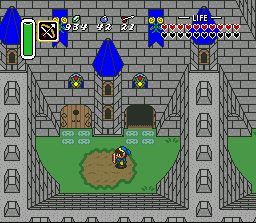 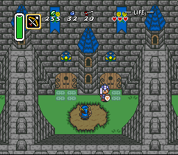 |
| The guard didn't appreciate Link opening the door last time, so he's keeping a close watch from now on. |
What are your thoughts? Reply on the Zelda3C Message Board!
October 24, 2006 - Two days since my last post. :) I decided to search for Zelda3C on several message boards and gained lots of feedback as a result. The masses say they're excited, full of hope, but unhappy with Calatia Castle. After reading that it "looks like it was drawn in MS Paint in 5 minutes", I realize that I not only need to improve the brick graphics, I need to overhaul its appearance altogether. Some people also dislike the strange perspective which allows you to see the north-facing walls. It took months to create the castle, and though it's fully functional and otherwise complete, people see it as an eye-sore, not a totally new place to see.
It would be a HUGE setback to scrap the castle and start over. Should I chalk it up to the learning process and throw it out? If not, maybe it can be saved by improving the tiles' graphics. I definitely need to add more colors -- more shades of grey. Right now I have two greys, two greens, two yellows, blue, and black. That's 8 colors maximum in the main palette. It's used for almost everything, including the walls, banners, and yellow rose garden. The other palette is similar, but has two browns, light blue, and red. It is used for minor things such as stained glass windows and doors.
Assuming the strange pyramid-like perspective is acceptable, I need to shatter the stained glass windows in favor of more grey shading. I can draw better than this, really -- I've just stretched my color usage too thin. There's even a third palette available that I haven't used; between the three of them, I hope to make the "8 colors in a single tile" rule less of an issue.
I'm going to continue working on the forest, for now, but I promise I'll revisit the castle and make it look less like an NES game. As always, thanks for the feedback! :)
What are your thoughts? Reply on the Zelda3C Message Board!
October 22, 2006 - The past few weeks have been loaded with discoveries and achievements! First and foremost, I have finalized the new forest tiles. To do this, I have switched around lots of graphics, moving or deleting the old while drawing the new. Many of these tiles look the same; I finally came up with a way to know each tile's number without constantly having to look at Hyrule Magic and/or count across rows of 16 columns. This may seem silly, but it was immensely helpful -- I only wish I'd thought of it while creating the tower, castle, and town...
The graphics shown are from Zelda 3, not Zelda3C. The two cut-outs are not taped to the laptop -- they're taped to strings (look closely) which are taped to the wall. These overlays are hanging from the wall right now, but any time I'm working with overworld tiles, I can lay them in front of the screen for instant labels. Two bitmap files are open at any one time; I use ctrl+tab to switch between them and reference one of the two sheets.
Now that all the tiles are in stone, I've created something for the forest that is so perfect, so convincing, you would swear it was part of the original game. It had to be created before anything else because plans would change if it hadn't worked. I can't say what it is -- the point of creating it would be defeated by revealing its existence. I'm very thrilled that I can actually have this in the game. Sorry, even hints could ruin it.
After this flawless creation, I started thinking about the creek which flows through the woods. The rivers in Zelda 3 are too steep for what I have in mind, requiring a dock with a ladder or a slanted grass hill to get out. I wanted to use the grassy edges found around shallow water in Zelda 3's south marsh area, but these are special graphics that only load in specific areas. Shallow water surrounded by grass, not deep water, appears all throughout Calatia; I finally came up with a solution to this problem.
All the trail in the game looks a lot better. The wavy lines that once separated grass from dirt have been replaced by grassy edges. Everywhere. The trails are more defined -- the dirt actually appears "lower" than the thick grass around it. Even the tops of hills look better -- grass now hangs from all sides of all hilltops. This begs the question -- what about mountain graphics? I don't know if I'm capable of drawing better mountain graphics; I'll ask Josh later on if he wants to develop original mountain surfaces. (He's got lots of art ahead of him already, including the drawings for the game's new instruction manual.)
I don't remember if I've posted the stone house's final colors; this screenshot displays them in the corner. I know I haven't posted the new bushes yet. What do you think? Are they as good as Zelda 3 bushes? I need to make them slightly darker so that they aren't the same green as the ground.
Getting back on topic, the reason for the sudden trail overhaul is to enable shallow water ANYWHERE in the game without having to surround it in deep water. Any trail can be immediately turned into shallow water by changing the palette. Two shades of brown become two shades of blue. The actual dirt tiles are replaced by shallow water tiles. I obviously wouldn't do that on this screen, but puddles, streams, and rivers without tall banks are consistently available.
This concludes the previous two weeks of development. I have the whole day ahead of me; time for rivers and trees!
What are your thoughts? Reply on the Zelda3C Message Board!
October 11, 2006 - After spending lots of time with monster graphics and their colors, I finally reached a point where I realized I wouldn't (and couldn't) be able to finalize all the creatures until later in the project. Palettes are so critical to monster graphics, it's almost not wise to draw the graphics until the palettes are known and set. For example, I replaced the withered, hopping peahat of the dark world with a zol, which are the blob slimes in Zelda 1 dungeons. This was a bad idea, not just because zols don't hop, but because none of the palettes available in dark world screens contain many shades of the same color. As a result, I temporarily butchered the submitted graphics in my attempt to render the zol with only three shades of brown. This monster will NOT be a zol, and a different monster will likely get this honor instead.
My artist is still drawing and another friend is still trying to unravel sprite attributes and code, so in the meantime, I've finally given in to the urge to resume overworld creation. I've been anticipating Harmony Forest since I was deep into house construction, many moons ago. I officially got started last week, but then life kept me away all weekend and all week, so far. It's so great to actually take steps toward making this new area instead of just jotting down ideas that can't yet be used.
Unlike many other areas, I'm planning to keep much of the Lost Woods elements intact while creating this new forest. There are a few things I want to add to these elements, but in order to add things, one must take things away. I want to keep the foliage, hollow logs, tree stump entrance (ie, thieve's hideout), and leafy shadow background. I don't plan to keep the lumberjacks' hollow tree nor the fog background. I might also have to give up the mini trees which appear within and without the foliage, but my goal is to keep them.
The free tiles are important for implementing horizontal hollow logs (to go with the vertical ones) as well as something else I'm not at liberty to describe. According to my current estimate, I have 34 tiles available. Right now I'm drawing out each structure on paper, such as the new hollow log, so that I can finalize the purpose of each tile. I'll move on to actually laying out the woods really soon, since I'm not overhauling the whole area as if it were a castle or town. And, I have a head start since my new leafy trees and pine trees are already completed. Hundreds of them are sitting in large pots right now, waiting to be planted...
What are your thoughts? Reply on the Zelda3C Message Board!
September 30, 2006 - Today is the day www.questforcalatia.net finally goes online! It's great to have a place to call home -- especially one with a custom address. :) I've done some organizing, file renaming and text editing; the pages are slightly better than ever. Now if only Google and thousands of people were informed about this location...
The questions I was asking about enemy palette colors have been answered; I know a lot more about how to handle loading and assigning sets of colors. Since then I've been steadily entering monster graphics into a separate, fresh copy of the ROM for testing and review by others. I don't want to post this "Bestiary ROM" online, since some of these creatures are a secret, but in honor of the new site's unvealing I need to at least post screenshots, right?
Moblins are the most common enemy in Zelda3C, not soldiers. Their presence in Calatia really makes the game feel more like a quest against monsters and less like you're "running from the law".
How can you have moblins without goriyas? These guys hurl spears, bombs, and even a circular boomerang that used to be a ball & chain weapon. The monster at the bottom, by the way, is the back of a moblin.
Yes, I know I already have giant deelers running around in the Outlands. I promise to keep these creatures (mostly) in the forest, which is where you would find them in Zelda 2.
Inspired by Zelda 2 octoroks, this purple version has a stronger build and won't ever be seen spitting in four directions just by rotating its spout. (A totally different monster will have that honor...)
These silent sentries make their return from the golden days of Zelda 1. They're even carrying their famous plated shields. The boss found in the nearby palace, by the way, has nothing to do with armos knights...
Remember, these are enemy graphics inserted into a bestiary copy of Zelda 3, not Zelda3C. None of the locations pictured here can be found in Calatia. Also, note that many other monsters have new graphics -- these are just a few samples I'm willing to disclose.
What are your thoughts? Reply on the Zelda3C Message Board!
August 26, 2006 - Ever since I finalized all the town's overworld screens, I've shifted gears and focused on monsters. I have many incredible graphics submissions (roughly 28 monsters' worth) that haven't been inserted into the game. In some cases this is easy -- just copy & paste -- while in other cases, submissions need tweaking or adjusting. This is an area of the project I'm reluctant to talk much about, since part of the surprise is running into unexpected creatures while exploring the world and dungeons. I've already copied several monsters' graphics into the game, so far. It's so much fun slay new creatures after watching them come to life the first time. Many of these monsters are from other games in the series, while a few of them are unique to this game.
I was motivated to write this update because I'm hoping someone can help me find the blue soldier's palette. I have a technique for finding monster palettes in Hyrule Magic really fast, but I've decided this one isn't listed at all. I've already searched the ROM itself for three of the colors used. Does anyone know if this data is hard-coded or formatted in an unusual way?
Hopefully I won't have to spend too much time on changing monster graphics, considering all the help I've had so far. More details to come as I decide what is and isn't a spoiler!
What are your thoughts? Reply on the Zelda3C Message Board!
Questions? Ideas? Suggestions?
Write to me!
Return to Zelda3C's main page
This site is not affiliated with nor endorsed by Nintendo in any way.